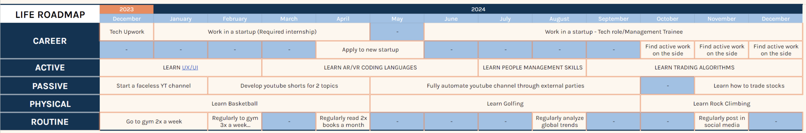
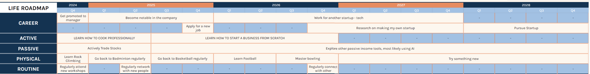

Hi there, my name is
JARED ONG
and I leverage technology to achieve sustainable growth
ABOUT ME
I am a passionate and goal-driven college senior interested in growth opportunities in technology, data-management, and entrepreneurship.
From the moment I first encountered the wonders of technology, I was captivated by its ability to transform our world and open up new possibilities. As a self-proclaimed tech enthusiast, I'm constantly on the lookout for the latest innovations that push the boundaries of human imagination, particularly those that blur the lines between the physical and digital realms. As such, I have become deeply intrigued by the power of programming to create tangible solutions and bring ideas to life.
Connect on LinkedInMy Vision
"To become an empowering leader, igniting the spark of innovation and empowering individuals to transform ideas into tangible machines through the transformative power of technology."
My Mission
- To champion the democratization of new technology in the Philippines, ensuring that its transformative power is accessible to all, regardless of background or expertise.
- To inspire a generation of innovators, problem solvers, and changemakers, who will harness technology to address global challenges and shape a brighter future.
- To equip individuals with the necessary and up-to-date technological skills and knowledge to bridge the gap between abstract concepts and tangible machines.
- To cultivate an environment that fosters creativity, collaboration, and boundless imagination, where ideas are nurtured and transformed into reality
- To continually grow as an individual and expand my connection and impact by establishing partnerships with organizations across various sectors.
CORE VALUES
Creativity:
Embracing ingenuity and unconventional thinking to push the boundaries of machine design.
Resourcefulness:
Maximizing available resources and minimizing waste to achieve sustainable solutions.
Collaboration:
Fostering a collaborative environment where diverse perspectives converge to enhance innovation.
Integrity:
Upholding ethical principles and ensuring technology are used responsibly for the betterment of society.
Continuous Learning:
Embracing lifelong learning and staying at the forefront of technological advancements.
External Analysis
STEP-C ANALYSIS
| Component | Factors |
|---|---|
| Societal Trends |
|
| Technological Trends |
|
| Economic Trends |
|
| Political Trends |
|
| Competitive Landscape |
|
Industry Life Cycle: Growth Stage
There is signficant rapid growth in the tech industry: The global tech market is expected to reach $5.2 trillion by 2025. New technologies are constantly being developed and adopted, which is driving growth in the industry.
Opportunities
| High Demand and Diverse Career Paths: | Continuous Learning and Growth: | Competitive Compensation and Benefits: | Global Impact and Problem-Solving: | Interdisciplinary Collaboration and Innovation: | In various fields including software development, cybersecurity, data science, and AI | There is constant innovation, where continuous learning and professional development are essential. | Tech professionals are generally well-compensated, often exceeding industry averages. | There is potential to make a impact on the world by developing innovative solutions to global challenges. | The tech industry is highly collaborative, bringing together individuals from diverse backgrounds and expertise. |
|---|
Threats
| Rapid Job Displacement: | Cybersecurity Threats and Data Breaches: | Work-Life Balance and Mental Health Concerns: | Ethical Considerations and Social Responsibility: |
|---|---|---|---|
| Tech professionals need to stay adaptable and continuously upskill to remain relevant | Tech professionals play a critical role in protecting sensitive data and preventing cyberattacks. | The tech industry can be demanding, with long hours and high-pressure environments. | Tech professionals have a responsibility to consider the ethical implications of their work. |
INTERNAL ANALYSIS
Strengths
| Passion for exploring new technologies | Strong problem-solving skills and strong foundation in technology | Genuine desire to help others and make a positive impact on the world. | Strong organizational and time management skills, | Strong curiosity and openness to new ideas and experiences. |
|---|---|---|---|---|
| Up-to-date with technological trends, applying them to solve real-world problems. | Knowledgable in different programming languages and software development | Exhibit a commitment to providing high-quality service, going above and beyond for others | Ensuring that plans are executed efficiently and deadlines are met. | Explore new possibilities, learn from mistakes and venture outside comfort zone. |
Weaknesses
| Occasional tendency to overlook minor details | Occasional difficulty staying focused on tasks | Occasional difficulty expressing thoughts and ideas clearly and concisely. | Excessive level of self-assurance in one's own ideas |
|---|---|---|---|
| Leads to errors or oversights that could have been avoided | Easily distracted by external stimuli or internal thoughts | Lead to misunderstandings and ineffective communication | Unwillingness to consider and incorporate alternative viewpoints |
OVERALL ANALYSIS: IE MATRIX

Click to view computation
THEREFORE we will pursue DEVELOPMENT STRATEGIES
Life Objectives
Personal
| Aspect | Long-term objectives | Short-term objectives | KPIs in 5-years time (Must not miss if regular interval) |
|---|---|---|---|
| Personal | Enjoy an active and fulfilling life | Achieve a healthy body | > Have at least 200 minutes of moderate-intensity exercise or 75 minutes of vigorous-intensity exercise per week. > Maintain a BMI of 18.5 to 24.9 |
| Regularly do sports | > Play a form of sport at least 2x a week > Be able to play 5 sports atleast at medium proficiency |
||
| Maintain connection with distant friends and relatives | > Connect with friends atleast once a week > Have regular phone calls or video chats. with friends and families atleast once a week |
||
| Develop personal branding | > Be active in social media platforms, garnering atleast 2 posts per month > Gain 2k followers on IG |
||
| Develop emotional intelligence and spiritual-awareness | Acquire knowledge from books | > Be able to read at least 2 books per month > Listen to 1 short audiobook daily |
|
| Make a positive impact on your community | Expand my social network | > Create atleast 2 new connections weekly > Expose myself to a networking session atleast once a month |
|
| Give back to the community | > Successfully create/participate in a community outreach program > Have connected to atleast 5 communiity development programs partners |
Professional
| Aspect | Long-term objectives | Short-term objectives | KPIs in 5-years time (Must not miss if regular interval) |
|---|---|---|---|
| Career & Financial | Become a thought leader in the industry | Engage in practical application and hands-on experience | > Be actively involved in atleast 20 major tech projects from any company > Be actively involved in atleast 15 UX/UI projects/hackathons |
| Become an expert in your field | > Always stay updated in relevant industries, spend 30 mins reading weekly reports | ||
| Become a well-known charismatic leader | > Successfully lead 10 team initiatives with atleast 90% satisfaction ratings from consumers | ||
| Launch my own startup | Gain insight from different startups | > Secure a management position in atleast 2 different types of startups > Network with atleast 10 Venture Capital Firms |
|
| Launch my own startup | > Successfully launch startup to the public > Get an intitial 90% satisfaction rate for initial feedback > Get 5k users at the end of the 5 year-period |
||
| Achieve financial independence | Financial Income & Passive Income | > Be able to 100% support myself financially > Secure 10% of what I earn as savings regularly > Earn 100k total from passive income |
STRATEGY & PLANS
Roadmap
2023-2024
2024-2028
Risks & Mitigation
| Risk/s | Mitigation/s |
|---|---|
| If I find myself not having the necessary skills or experience to achieve my goals. | Continuously develop your skills and knowledge through training, certifications, and on-the-job experience. Actively network with professionals in your field to gain insights and advice. |
| Facing unexpected challenges or setbacks in your career path. | Maintain a positive mindset, set apart new time to continue to develop career goals |
| Losing motivation or feeling overwhelmed by your goals. | Regularly review your progress and celebrate your accomplishments. Find a support system or accountability partner to stay motivated. |